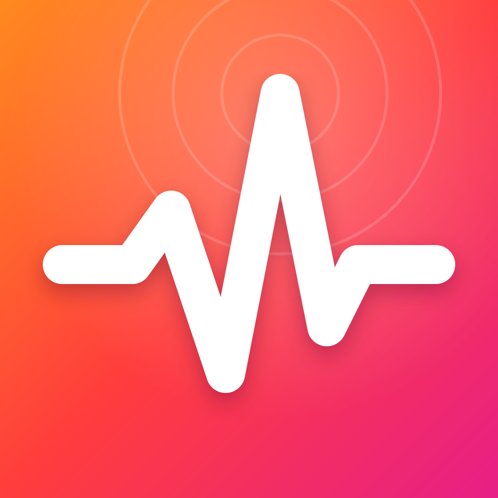

Brand kit
The PostQuake brand
The mark is a seismograph trace inside a hot tile: a quiet feed line that suddenly spikes. That's what a good post does. Use these files as they are, and don't redraw them.
Logos
SVG masters. Use the dark lockup on dark backgrounds and the light lockup on light ones. The mono mark picks up the current text colour.
Lockup, dark SVG ↓

Mark SVG ↓

Lockup, light SVG ↓


App / avatar icon SVG ↓

Mono mark SVG ↓

Wave (no tile) SVG ↓

Wave on light SVG ↓
Small sizes
The trace is simple on purpose: one dip, one drop, one spike, so it still reads at favicon size.
Colour
One hot gradient over near-black ink. The gradient always runs orange → red → magenta, top-left to bottom-right.
Magma
#FF7A1AQuake Red
#FF3D3DAftershock
#F0247FHot gradient
115° · 0 / 55 / 100%Ink
#0B0A0FInk 3
#1A1922Paper
#F6F3EESignal (UI only)
#3DDC97Type
All three are free on Google Fonts under the SIL Open Font License.
Posts that shake the feed.Bricolage Grotesque ExtraBold · headlines, logo
From one link to a week of ready-to-post slideshows.Inter · body, UI
▸ batch_render 7/7 sets readyJetBrains Mono · code, labels
Voice & usage
Energetic, plain-spoken and honest about what ships.
Do
- Write the name as PostQuake, with a capital P and Q.
- Lean on the vocabulary: Magnitude (a post's score), Aftershocks (follow-ups to a winner), Seismograph (analytics).
- Keep at least a quarter of the tile width clear around the mark.
- Put the gradient tile on ink or paper backgrounds.
Don't
- Joke about, or run campaigns tied to, real earthquakes or disasters.
- Recolour, stretch, rotate or outline the mark.
- Put the gradient mark on the gradient. Use the mono or white wave there instead.
- Write "Postquake", "Post Quake" or "POSTQUAKE" in running text.